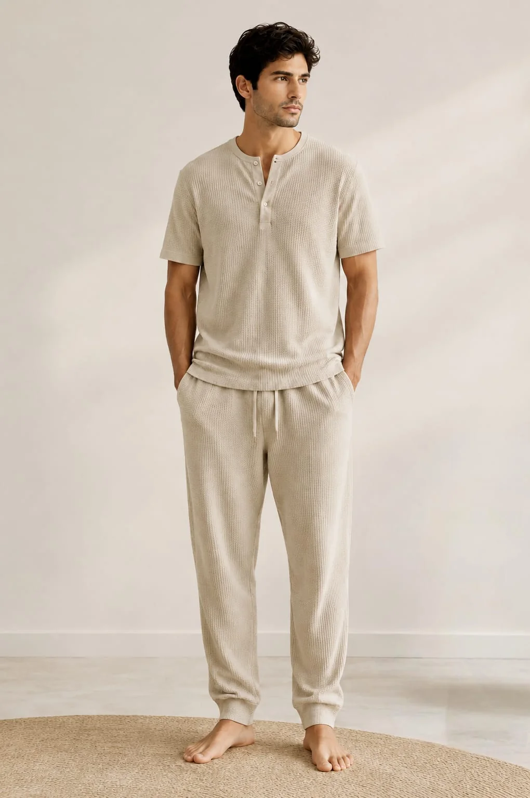

Product development
Translate references, sketches or tech packs into clear development requirements and an approval route.
Tiruppur apparel sourcing
2D Creation helps buyers connect product decisions, material sourcing, sampling, production follow-up, quality checkpoints and shipment preparation through one accountable sourcing workflow.

Service scope
The exact service plan is defined around the product, quantity, market, quality level and delivery requirements shared by the buyer.
Translate references, sketches or tech packs into clear development requirements and an approval route.
Coordinate fabric, trims, colours, finishes and commercial options against the intended product and target.
Organise sample requests, consolidate comments and track revisions before production decisions are made.
Connect approvals, material readiness, factory planning and milestones through a practical production calendar.
Align checkpoints with approved specifications and communicate issues that need correction or buyer direction.
Coordinate packing information, documentation inputs and final handover requirements before dispatch.
How sourcing moves
Milestones remain visible so decisions can be made before they become production delays.
Clarify product, market, quantity, quality, target and timing.
Identify material, construction, development and capacity considerations.
Coordinate prototypes and revisions against consolidated comments.
Align approved specifications, commercial terms and production inputs.
Track milestones, quality observations and corrective actions.
Confirm final packing, documentation and shipment readiness.
A stronger first brief
A complete starting brief helps the team evaluate feasibility and respond with the right questions. If some details are not yet decided, identify them as open decisions.
Explore next
Common questions
Yes. Share the clearest references you have and identify what still needs development. The team can then explain which specifications are required before sampling or costing.
They depend on fabric, colour, construction, decoration, trims, packaging and total order structure. They are confirmed after the brief is reviewed.
A realistic schedule is prepared after reviewing material availability, sample rounds, approval timing, order quantity and production capacity.
Share your product type, quantity, destination, references and required date to begin a practical sourcing discussion.